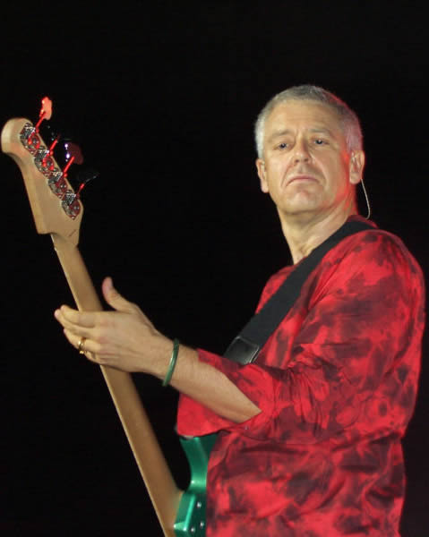
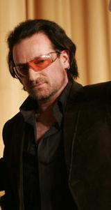
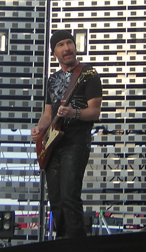
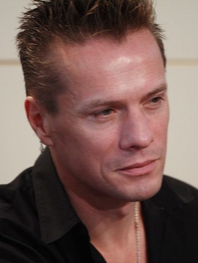

Integrantes
Adam Clayton
|
 |
Adam Charles Clayton (Oxford, 13 de Março de 1960) é o baixista do U2, banda irlandesa de rock. Adam não teve aulas de música. Foi um auto didacta que chegou a bom porto graças a muita dedicação e treino.
Biografia
Adam foi o primeiro de três filhos, Adam, Sindy (Sarah Jane) e Sebastian de Jo e Brian Clayton. A família Clayton viveu entre Inglaterra e África até 1965, quando se mudaram para Malahide, na Irlanda, após o pai Clayton ter aceite emprego como piloto na companhia aérea irlandesa Aer Lingus. Adam cresceu e frequentou a escola. Primeiro a escola primária, St Andrews (a mesma frequentada por The Edge), a escola preparatória de Castle Park e a St Columba’s College Rathfarnham, onde este até aos 13 anos.
Conforme os anos foram passando, Adam tornou-se um jovem rebelde, com um gosto especial por quebrar regras. Um dos seus melhores amigos de St Columba, John Lesley, começou a instigar os gostos musicais de Adam, apresentando-lhe alguns grupos do momento. John tocava guitarra e convenceu Adam a tocar baixo para se juntar à banda que estava a criar.
Em 1975, o baixista recebe o seu primeiro baixo e entra na banda de John. Mas devido à sua postura rebelde, os pais Clayton optam por mandar o seu filho mais velho para a escola pública local – Mount Temple. Assim, em Setembro de 1976, o baixista começou a estudar em Mount Temple, mas não deixou a rebeldia de lado, a pontos de dois anos mais tarde ser convidado a abandonar a escola depois de ter aparecido com um vestido feminino e de o ter despido em plena escola.
|
TOPO /\
Bono
|  |
Paul David Hewson, popularmente conhecido como Bono (Dublin, 10 de Maio de 1960) é um cantor irlandês, líder do grupo musical U2 e activista pelos direitos humanos.
Em 1975, Larry Mullen Jr. (baterista do U2) colocou na escola Mount Temple um anúncio procurando por pessoas interessadas a formar uma banda. Apareceram Dave Evans (The Edge), Dick Evans, Adam Clayton e Bono. Inicialmente ninguém queria cantar. Havia um baixista, um baterista e 3 guitarristas. Mas como precisavam de um vocalista e Bono nunca podia transportar a sua guitarra para os ensaios ficou ele o responsável pelos vocais.
Seu pseudônimo "Bono" – é uma adaptação de Bona Vox, uma marca de aparelho auditivo que em Latim traduz-se como "boa voz".
Em 2005, por suas atitudes humanistas, foi indicado ao Prêmio Nobel da Paz.
Ícone do pop/rock mundial, Bono, apesar de ser um performer, nunca deixou suas raízes cristãs. Em toda sua carreira como líder do U2, Bono sempre escreveu músicas que refletissem os ideais cristãos tendo, inclusive, feito uma apresentação para o Papa João Paulo II. É fã declarado do grupo musical Celtic Woman formado pelas quatro vocalistas irlandesas - Chloë Agnew, Lisa Kelly, Méav e Orla Fallon - e a violinista Mairead Nesbitt.
Também se tornou um símbolo na luta contra a pobreza no continente Africano, ajudando as pessoas que lá vivem e necessitam de ajuda a saírem da miséria.
Bono afirma, em sua música "I Still Haven't Found What I'm Looking For", que o que procura é o "Holy Ghost", o Espírito Santo. Bono foi criado com uma base espiritual muito forte, e afirma que acredita sim em um mundo melhor, em que as pessoas serão boas e viverão em paz.
Em 2007, participou do longe-metragem Across The Universe na pele de Dr. Robert, interpretando as canções dos Beatles "I Am The Walrus" e "Lucy In The Sky With Diamonds".
|
TOPO /\
The Edge
|  |
David Howell Evans (8 de Agosto de 1961) nascido em Barking no oeste de Londres, Inglaterra no Reino Unido é o nome de The Edge, guitarrista, backin’ vocal e tecladista da banda irlandesa de rock, U2.
Biográfia
Quando The Edge completou um ano de idade, a família se mudou para Dublin, na Irlânda. Aos 15 anos de idade estava na escola, e tinha fâma de menino sossegado e inteligente.Até então nunca havia tocado numa guitarra. Mas logo as coisas mudaram e ele passaria a fazer parte da mesma banda de Larry Mullen Jr e Bono Vox. The Edge foi o primeiro a ler o anúncio e entrar em contato com Larry. Seu ídolo era Rory Gallagher, que na opinião dele era o melhor guitarrista da Irlânda. Em 1983 casou se com Aislinn O'Sullivian e teve 3 filhos, Holly (1985), Arun (1986) e Blue Angel (1989). Em 1990 se separou, mas a separação só foi oficializada em 1996. E em 2002 casou se com a antiga dançarina da Zoo Tv Tour Morleigh Steinberg. Com ela teve dois filhos, Sian (1997) e Levi (1999). David Howell Evans, mais conhecido por seu apelido The Edge, é um músico melhor conhecido como guitarrista da banda irlandesa U2. Seu estilo de tocar guitarra e estilo percussivo de tocar, com seu inovador uso de processador de som digital — delay em particular — é considerado um dos mais inovadores guitarristas de todos os tempos, redefeniu o som da guitarra e proporcionou um som único ao U2. Em 1987 e 2003 The Edge ganhou o prêmio da frabricante de guitarras Gibson de melhor guitarrista (ano que a banda se tornava a maior do planeta após o lançamento do álbum "The Joshua Tree" em 1987, e em 2003 a revista Rolling Stone nomeou The Edge o número #24 em sua lista dos: "100 maiores guitarristas de todos os tempos".
|
TOPO /\
Larry Mullen Jr.
|  |
Lawrence "Larry" Joseph Mullen Jr. (Dublin, 31 de outubro de 1961) é um baterista irlandês, fundador e integrante da banda U2. Foi Larry que colocou, em 1976, o aviso na Mount Temple High School buscando pessoas para formar uma banda, o Feedback, que acabou tornando-se o U2.
Ele trabalhou em vários projetos fora do U2 durante sua carreira , incluindo uma colaboração com Michael Stipe e Mike Mills do R.E.M. para formar o Automatic Baby em 1993 e trabalhando com o companheiro de banda Adam Clayton na regravação do tema do filme Mission: Impossible em 1996. Ele e o U2 tem vários prêmios incluindo 22 prêmios Grammy.
Biografia
Antes de fundar o U2, Mullen estva envolvido numa banda que tocava músicas militares, chamada "The Artane Boys Band", contribuindo para as "batidas militares" comuns no trabalho do baterista como na canção "Sunday Bloody Sunday".
Antes de vencer um pequeno prêmio de Limerick, chamado "Ireland talent contest", eles mudaram seu nome novamente, para o definitivo U2, formalmente feito para um show de despedida para Dick Evans, se tornando o grupo com quatro integrantes que conhecemos até hoje.
Com o U2 mais popular, Mullen adicionou o "Junior" para seu nome para parar a confusão com seu pai (também Larry Mullen), que recebeu muitas contas que seriam para seu filho. Mullen não é casado, mas viveu com sua namorada, Ann Acheson, por mais de 20 anos. Eles têm três crianças, Aaron Elvis (nascido em 1995), Ava (1998), e Ezra (2001). Ele é conhecido por ser quem tem as rédeas da banda, e prefere deixar para os outros membros os holofotes das entrevistas, Mullen também tocou sintetizador ou teclados em algumas músicas, incluindo "United Colours" do Original Soundtracks 1, de 1995, um álbum que ele nunca gostou.
|
TOPO /\
|